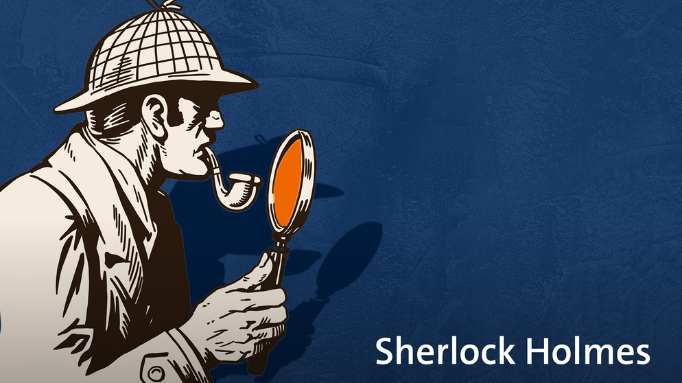

1 The Big Picture
- Think of the logic of social science as inference to the best explanation
- Appreciate the strengths and limitations of social science research
- Get an overview of the research project workflow
1.1 Introduction
This chapter launches your independent study by presenting you with the big picture: that is, it seeks to provide you with a sense of what social science is, how to go about it, and what we can reasonably expect to learn from it. The chapters that follow each present you with specific, concrete steps, strategies, and directives necessary to advance your research project. But in order to see how they all fit together, we begin with a careful examination of the foundational logic underpinning the whole process.
1.2 The logic of social science

The broad field of knowledge known as social science is like a mansion with many rooms. Inside each room are groups of researchers concerned with a particular type of problem or puzzle. Economists in one room discuss why are some nations rich while others are poor. Political scienists in a neighboring room may be arguing about why somedemocracies are stable while other regimes succumb to autocracy. Folks down the hall or in another wing of the building may be consumed with questions that economists and political scientists rarely consider, such as: How is authoritative knowledge produced? Or how will the declining childhood vaccination rate impact US public health in the future?
Despite the rich variety and varied perspectives that constitute the field, most social scientists agree on one thing: that the goal of social science is to explain the social and political world. It’s that simple. The world presents us with problems or puzzles that we can’t but would like to explain, so we go about trying to explain them.
1.4 The research project workflow
Let’s wrap up our tour of the big picture by taking a bird’s eye view of this semester’s research project as a whole. Figure 1.5 displays a diagram representing the research workflow, starting and ending with the state of existing knowledge.

There’s a lot going on in this diagram, so let’s explain it piece by piece. The blue-shaded bubbles represent distinct stages of the research process. The solid arrows trace a clockwise workflow from topic in the top-right corner to findings and implications near the top-left. The dashed arrows trace a counter-clockwise workflow back through the stages. This is meant to capture that although the workflow looks chronological, real-world research typically iterates back and forth between stages, recursively revising and refining previous stages as we move forward to new ones.
There are also two red-shaded deliverables that are spun out of the workflow at various points. A formal research proposal is expected around the midpoint in the semester and a polished research paper is expected at the end.
As the semester proceeds, we’ll spend significant time unpacking each and every one of these stages as you move your project through the research workflow. I’ll also clarify precisely what is expected in the research proposal and paper. The chapters that follow do precisely that. For now, to get a better sense of the big picture, let’s take a brief tour through the workflow.
Existing knowledge
All research projects begin and end with the state of existing knowledge. We draw from it when we learn about a subject that interests us, and we contribute to it when we communicate our research findings to audiences and stakeholders. As researchers, our intention is to extend the frontiers of knowledge, even if only modestly, leaving the field in a better place than when we found it.
Topic, problem/puzzle, question
While existing knowledge typically plays an implicit, background role, in the formation of research projects, specific topics, problems, puzzles, or questions are usually top of mind in the formation of research projects.
Join the conversation
Theory and hypotheses
Research design
Data collection and analysis
Findings and implications
Inference is the goal
There’s a common misconception among new students in the social sciences that they will find a single correct answer to their research question—something along the lines of, say, \(2 + 2 = 4\).
Inference is simply the act of making claims that go beyond the particular evidence examined (King et al. 1994).
But if by answer we mean a transparently reasoned, evidence-based conclusion that is amenable to future updating based on new evidence, then let me reassure you that you’re ready for the challenge that awaits you.
The process by which we arrive at this transparently reasoned, evidence-based, and always-tentative conclusion goes by the name inference, and it is the basis of all social science research. According to its Wikipedia entry, inference is simply a “conclusion reached on the basis of evidence and reasoning.” Why must we infer?
We make so many inferences in our everyday lives, we may not even consciously notice. When we wake up and find that the sidewalk is wet, we infer that it rained overnight. When you see a friend sitting down to have a snack, you may infer that they’re hungry. If you find your roommate packing a bag, you might infer that they are going away for the weekend.
In the social sciences, we make inferences about other kinds of phenomena, but the logic is the same. After observing a polity’s electoral process, we may classify the regime as either a democracy or an autocracy. To survey public opinion, we typically rely on a representative sample from which we generalize about the whole population. If the economy enters a recession, we may expect an incumbent’s chances of reelection to diminish.
These examples of inference from both everyday life and the social sciences have something in common: they all occur under conditions of uncertainty. This is why social science research is fundamentally unlike concluding that \(2 + 2 = 4\). The simple definition of the equation’s symbols provides us with complete information and makes the conclusion logically inescapable. We can claim that \(2 + 2 = 4\) with absolute certainty.
When it comes to social science, we not so lucky. Typically, we operate with incomplete information and must form our conclusions carefully to account for uncertainty. We may think that it was the economic recession that doomed the president’s reelection, but perhaps it was a corruption scandal that was top of mind for voters that year. Needing to do our research under conditions of uncertainty makes social science challenging but also interesting and ultimately rewarding.
Inference and explanation
The centrality of inference to social science research may feel a little deflating at first. It is natural to want to find clear and definite answers to questions of widespread public concern and political importance. Does the ubiquity of uncertainty mean that we can’t really explain anything?
Why do much uncertainty? There are multiple sources of uncertainty when conducting research on the social and political world (Gailmard 2014, 73).
A pluralist methodology
I’ll conclude this introductory chapter with a brief statement intended to clarify the methodological underpinnings of the research advice contained in this book. Social science can be thought of as a mansion with many rooms,
Philosophically, this book embraces what’s called methodological pluralism. This particular view of social science follows from the principles laid out above. If we as researchers operate under conditions of uncertainty and our inferences are always tentative and subject to revision, then it’s best that we take a broadly inclusive approach to social science research. Gatekeeping—that is, judging what is and is not legitimate social science—can be a harmful and unproductive practice, and is
This is not the same as saying that social science is a field in which “anything goes.” As we’ve established, there are standards that must be met.
1.5 Conclusion
Be a mindful learner
Social scientific reasoning
Social scientists have a distinctive (though not unique) way of approaching their task of explaining the social and political world. Sometimes called inference to the best explanation, the distinctive logic of social scientific inquiry goes something like this:
This abstract summary of the typical social science approach can be clarified by breaking it down into three concrete steps:
Generate possible explanations based on some initial observation(s)
Collect new data relevant to the implications of those explanations
Adjudicate between rival explanations in light of that new data
While these steps are the touchstone of most social science literature, the logic of inference to the best explanation is actually quite common in other avenues of life. Let’s consider three non-social scientific examples.
Everyday reasoning
The first example consists of a rather mundane puzzle many of us know from our everyday lives. Perhaps you’ve had the experience of waking up in the morning, looking outside the window, and wondering: why’s the grass all wet? Without exerting any extra effort, many of us slip right into inferring to the best explanation.
First, we generate possible explanations for observing wet grass in the morning:
Overnight rain
Morning dew
Neighbor’s sprinkler system
Next, we collect additional information based on the implications of those explanations:
Check the weather app
Look outside again
Finally, we critically assess what the new information implies about which explanation is more or less likely to be true. If the app says there was a 35% chance of rain last night and the road and sidewalk also appear wet, we gain confidence that overnight rain is the best explanation.
Mysteries

A more explicit example of inference to the best explanation can be found in mystery stories, such as the novellas featuring famed fictional detective Sherlock Holmes or the many television crime and courtroom dramas found in the Law & Order extended universe. In instances such as these, the puzzle to be explained is, of course, who committed the crime?
Though the stakes are very different than when explaining wet grass in the morning, the logic of inquiry is basically the same.
First, the investigator generates a list of potential suspects based on the initial facts of the crime.
Next, the investigator collects additional evidence to corroborate the suspects’ alibis.
Finally, the investigator rules out suspects as likely perpetrators based on new evidence collected.
Medical diagnoses
HBO’s hit medical drama The Pitt is set in a hospital emergency room in downtown Pittsburgh, Pennsylvania. Each episode is a one-hour increment of a 12-hour day shift, depicting in real time the stressful and chaotic environment in which overburdened and under-resourced hospital staff try to help their patients.
While each patient arrives with a distinct situation, the underlying logic of diagnosis is the same.
Doctors generate a differential diagnosis based on patient’s symptoms
Then doctors order lab tests and/or check patient for additional symptoms consistent with contending diagnoses
Rule out diseases or injuries inconsistent with lab results and make a final diagnosis
As these examples illustrate, inference to the best explanation is a common form of reasoning found in diverse settings outside of social science. But it is also foundational to the work of social scientists. Let’s consider an example.
Political science: explaining the rise of right wing populism
One of the major debates currently animating political science concerns explaining the rise of right wing populism across the world over the last few decades (Berman 2021). Despite the clear differences from everyday life, murder mysteries, and emergency rooms, we can see inference to the best explanation at work in this field as well.
Researchers theorize potential explanations based on initial observation of rising right wing populism
Next, researchers collect data to test implications of rival explanations
Adjudicate between rival explanations in light of new data
Let’s pause here to recognize how this example returns us to the description of social science research offered at the beginning of this guide. While we’ve layered on the label inference to the best explanation in this chapter, we are only re-describing the research process in terms of the particular mode of social science reasoning happening under the surface.
It begins with an initial observation—wet grass, a robbery, a feverish patient, or the election of a populist—which presents us with a problem or puzzle in need of explanation. Having made this initial observation, we generate potential explanations or theories on our own or more often in conversation with other specialists. To assess which theory is most compatible with the data, we gather additional information by testing the theories’ empirical implications. If theory A is true, what would I expect to see in the world? The aggregate weight of the evidence collected in hypothesis testing helps us infer which theory or explanation is most likely to be true.